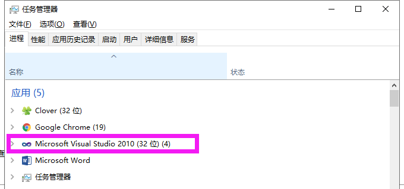
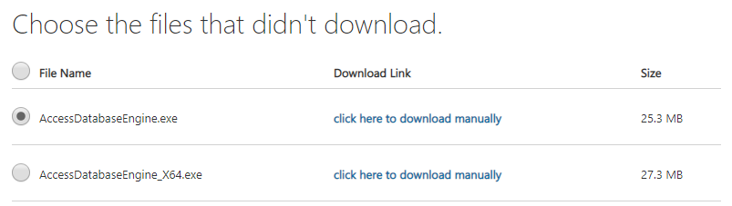

错误描述：
在VS2010执行读取excel文件时，报错“未在本地计算机上注册“Microsoft.ACE.OLEDB.12.0”提供程序”
业务代码：
//下面代码是基于窗体button来做的，如果使用需要转为控制台
private void btnOpen_Click(object sender, EventArgs e)
{
DataSet myds = new DataSet();
OpenFileDialog openFiledialog1 = new OpenFileDialog();
openFiledialog1.Filter = @"Microsoft Excel 2007 文件(*.xlsx)|*.xlsx|Microsoft Excel 97/2000/XP/2003 文件(*.xls)|*.xls";//打开2003或者2007Excel文件
openFiledialog1.ShowDialog();
txt_Path.Text = openFiledialog1.FileName;
if (txt_Path.Text != "")
{
myds = GetDataSet(txt_Path.Text);//将Excel数据读取并转换为DataSet
dgvData.DataSource = myds.Tables[0];//将数据绑定到DataGridView
//int numb=5;
int numb = this.dgvData.Rows.Count;
for (int i = 0; i < numb;i++ )
{
comboBox1.Items.Add(this.dgvData.Rows[i].Cells[(0)].Value);
}
}报错原因：
没有安装数据访问组件，需要安装相应版本的数据访问组件（AccessDatabaseEngine）
解决方法：
下载安装”Microsoft Access Database Engine Redistributable“
根据自己VS2010的版本选择对应版本版本，可以通过任务管理器（Ctrl+Alt+Delete）来查看VS版本

这里根据我电脑的配置（win10+VS2010（32bit））选择对应的版本
